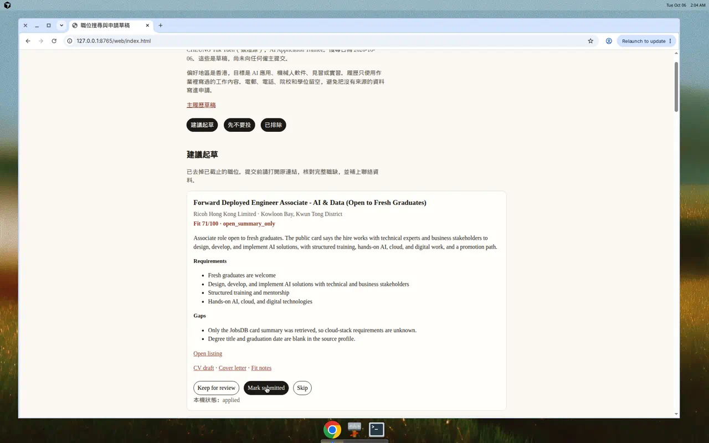
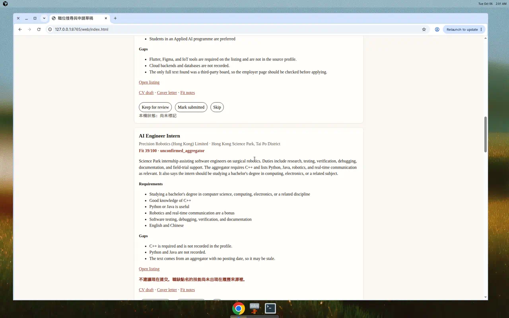
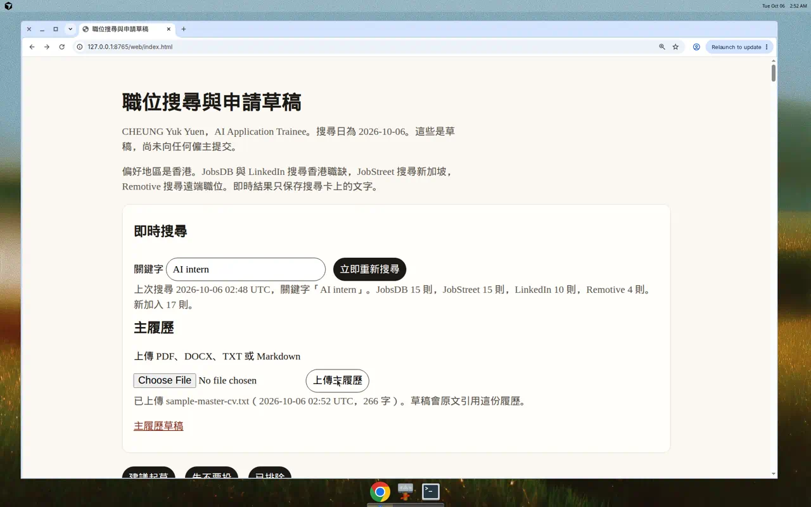
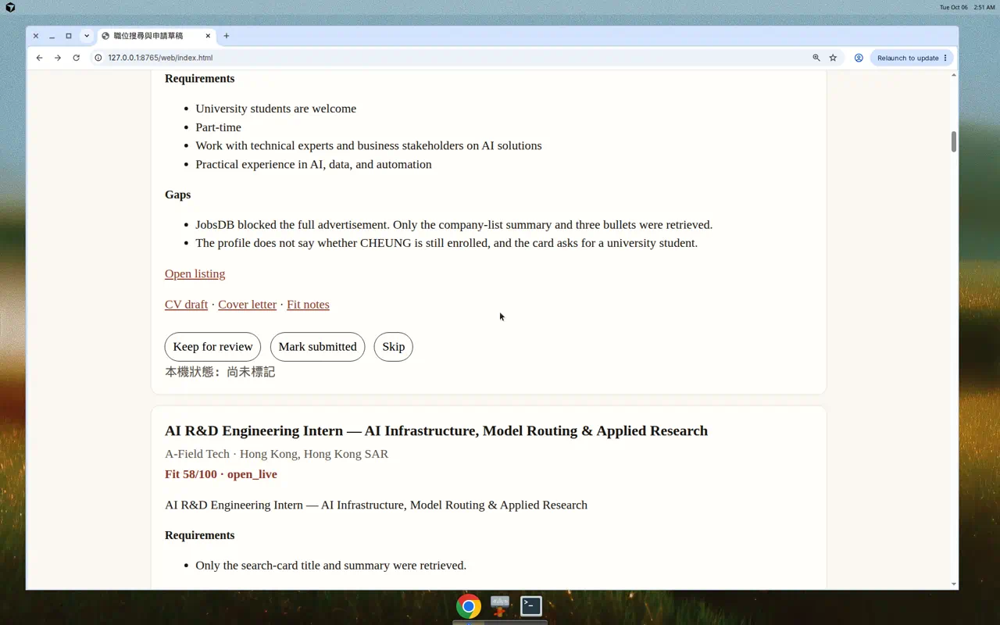
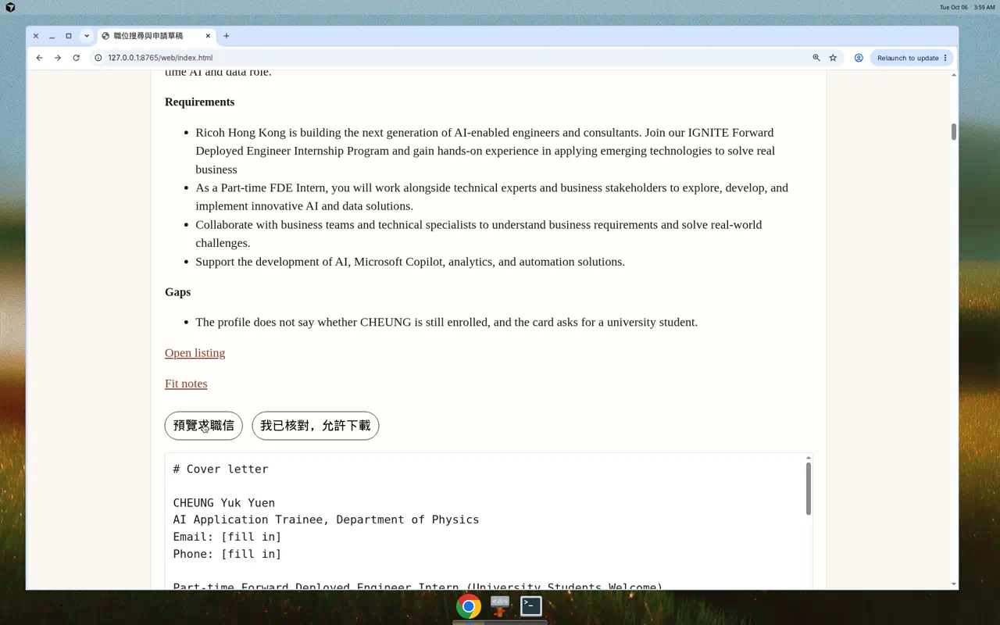
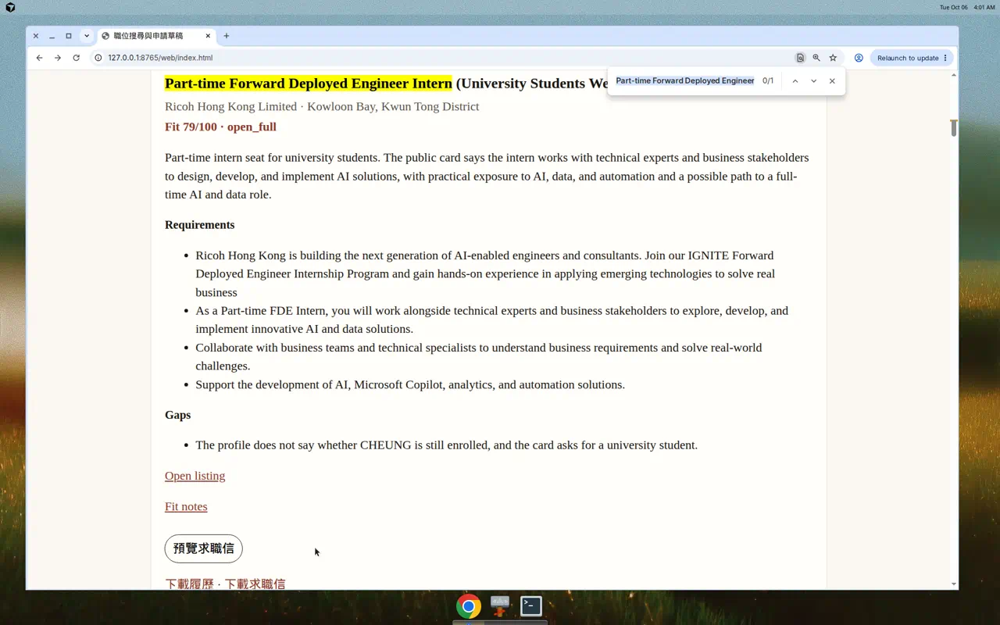
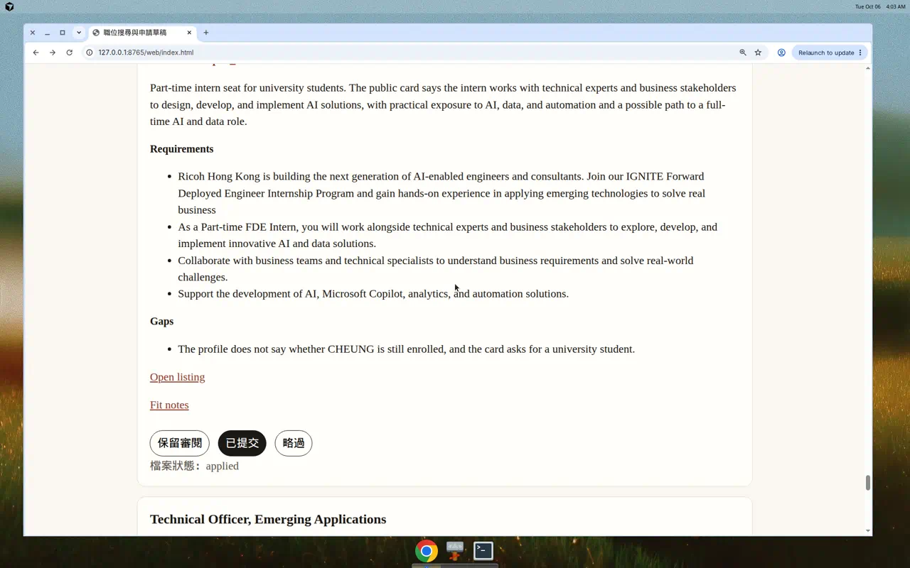
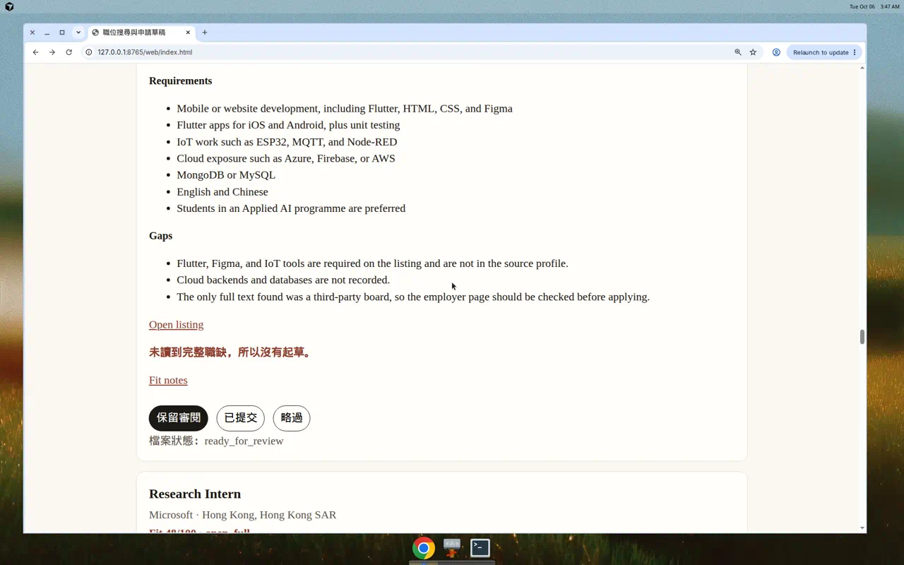

CHEUNG Yuk Yuen
6 October 2026
This report keeps the prompts and the Agent replies from one Cloud Agent run on the job-search project. The text in the prompt and reply blocks is copied from that run. It is not rewritten from memory. Tutorial 2 notes were not in the project folder, so they are not used here. The Agent did not hand back a separate plan. The record is the prompts, the replies, and the screenshots taken during the runs.
The run is the Cloud Agent session that built this repository. Replies that were written in Chinese are left in Chinese. A short English note sits in front of each one.
The task uses public job advertisements and the work facts already written in Assignment 1. It does not use passwords, a student ID number, grades, medical records, or another person’s private information. Contact email, phone, and LinkedIn stay blank because Assignment 1 does not give them.
The Agent was not asked to send, publish, delete, purchase, or change permissions on an employer account. The program does not submit applications. During the browser check, “已提交” was clicked only on the local page. That click wrote data/tracker.json. The mark was then put back to “not submitted”, so the saved project does not claim that an application was sent. Uploaded CV files stay on the machine (data/uploads/ and data/master_cv.json) and are not committed.
From Assignment 1 I took “Searching for jobs and preparing applications”. The finished result I wanted was a local record of public vacancies that drops closed or already submitted roles, scores the rest only against the experience written in the assignment, and drafts a CV and a cover letter for a person to read before anything is sent. I did not want the Agent to apply for me.
The recorded experience is an AI Application Trainee role in a Department of Physics: a robot AI chatbot shown at a College of Science Information Day, tests of AI models and server-tunnelling, Android simulation testing, debugging with Cursor and Claude Code, and technology research. University, degree, and programming languages are not in that source, so the drafts leave those fields as [fill in].
Tools used in this trial: the uploaded Assignment 1 PDF, public job pages, and files in the repository (data/profile.json, data/jobs.json, data/tracker.json, applications/, and web/index.html).
I would like to do Searching for jobs and
preparing applications listed in the pdf.
The reply below is copied unchanged.
我先讀你上傳的 PDF，確認作業要求與要搜尋、準備的職位內容。
作業裡的第四項是「搜尋職位並準備申請」。我先看工作區裡有沒有履歷、技能資料或現成專案，再依那份流程動手。
作業第四項是職位搜尋與申請準備。公開職缺已核對過一輪，接下來會依張煜源的履歷草稿建立追蹤與申請材料，並把已關閉或條件不符的職位排除。
公開職缺裡，香港、且較接近見習或應屆程度的職位會先起草申請；已截止、地點不符或條件差太遠的會分開標出。
履歷來源只有英文姓名 CHEUNG Yuk Yuen。我先前寫入的中文姓名沒有出處，會先拿掉再更新草稿。
搜尋日是 2026-10-06。草稿已放在 PR #1，尚未向任何僱主提交。履歷只採用作業裡寫過的工作：機械人 AI 聊天機械人、模型與伺服器隧道測試、Android 模擬除錯。院校、學位、電郵、電話和程式語言在來源裡是空白，所以保持 [fill in]。
最值得先看的是兩則仍在 JobsDB 公司列表上的 Ricoh 職位，地點都是九龍灣。
- Forward Deployed Engineer Associate - AI & Data（71/100）歡迎應屆畢業生，有培訓。完整廣告當日打不開，投遞前請再讀職缺。信在 applications/ricoh-fde-associate/。
- 兼職 Forward Deployed Engineer 實習（69/100）歡迎在學學生。作業沒有寫明是否仍在學，確認符合後才用 applications/ricoh-fde-intern/。
另外兩份草稿先不要寄出。SmartAge（沙田，54/100）要求 Flutter 和 IoT，現有履歷沒有。Precision Robotics 的機械人測試工作很接近，但聚合頁要求 C++，而且沒有刊登日期。
已排除、避免重複申請的有：生產力促進局 Technical Officer（頁面寫已額滿）、Macroview AI Automation（廣告已過期）、PharmCare 聊天機械人實習（已停止接受申請，而且該則指向香港大學計劃）。DBS 2027 的 AI 管理培訓生在新加坡，並要求 Python，所以只留下不匹配說明。
打開 web/index.html 可以篩選「建議起草 / 先不要投 / 已排除」，並在瀏覽器裡標記已提交。主履歷在 applications/master/cv.md。
The page from this trial let me filter drafts, holds, and excluded jobs, and it showed a warning on the robotics card. The “Mark submitted” control changed the label on screen.


I then asked the Agent to state the decision chain, so the first result could be checked against the code rather than against the summary alone.
Give the logic this project.
The reply below is copied unchanged.
我先對照目前的搜尋、評分和起草程式，再按實際執行順序說明這份專案的邏輯。
[MODE: RESEARCH]
這份專案把作業第四項做成一條固定決策鏈：先收職位，再丟掉不能投的，然後只按作業裡寫過的經歷計分，最後只為仍值得人工看的職位起草履歷和求職信。程式不會替你遞交申請。
輸入有三份。data/profile.json 只放作業寫過的事實：物理系 AI Application Trainee、機械人聊天機械人、模型與伺服器隧道測試、Android 模擬除錯。院校、學位、電郵、電話和程式語言是空的。data/jobs.json 是 2026-10-06 讀到的公開職缺，每則自帶要求、吻合點、缺口，以及一個人工核過的 prepareApplication。data/tracker.json 記錄這則有沒有提交。
src/career_agent.py 的 run() 依這個順序處理。
第一步，搜尋條件已經寫死在職缺檔：香港、AI 應用、機械人軟件、見習或實習。程式不自己上網，它讀的是當日已核對並存檔的結果。
第二步，classify() 先做排除。listingStatus 是 closed 或 expired，或者追蹤檔的 applied 是 true，該職位進入「已排除」，分數直接記 0，不起草履歷。這是為了避免對已額滿、已過期或已經投過的職位再寫一份信。
第三步，其餘職位用 score_job() 計分。公式是 baseScore + evidence 加分 + gaps 減分，結果限制在 0 到 100。加分只對應作業裡有的工作，例如聊天機械人對上「實作 AI 方案」。減分對應職缺點名、但履歷來源沒有的條件，例如 C++、Flutter、新加坡工作地點，或當日只看到職位卡、沒看到全文。
第四步，分類不單看分數。prepareApplication 為真，才進入「建議起草」，並依分數由高到低排列，寫出該職位的履歷、求職信和評分說明。為假的開放職位進入「先不要投」，只寫評分說明。目前起草的是 Ricoh Associate 71、Ricoh 實習 69、SmartAge 54、Precision Robotics 39。39 分仍有草稿，是因為機械人測試很接近，但頁面上會寫明現在不要提交。
履歷邏輯在 render_cv()。同一組經歷會按該職位的 cvOrder 重排：Ricoh 把聊天機械人放前面，SmartAge 和 Precision Robotics 把 Android 測試放前面。摘要用該職位的 summaryAngle。空的聯絡欄印成 [fill in]。求職信只拼接該職位已寫好的段落，不會另外編造技能。
網頁 web/index.html 是這三堆結果的閱讀介面。畫面上的「保留 / 已提交 / 略過」只存在瀏覽器 localStorage，不會改檔案，也不會送出申請。要讓下次執行真正拿掉一則職位，必須把 data/tracker.json 裡該則的 applied 改成 true，再執行 python3 src/career_agent.py。
That last paragraph is the important result of the first trial. The screen could say “applied”, but the file the next run would read did not change.
I changed the task twice after the first trial. The first change asked for live search and a CV upload. The second change was a check, then a more specific prompt that copied the gaps the check had named.
The first trial only read a saved job file. This prompt asked the Agent to use job boards, to put a refetch button on the page, and to accept an uploaded master CV.
I would like to add a function of net searching. In various job platform. And add a button in our interface to refetch the job immediately. And the box to user to upload their master cv.
The reply below is copied unchanged.
你要的是三件事：跨平台即時搜尋、頁面上的重新抓取按鈕，以及上傳主履歷。我先看現有介面和資料流，再把搜尋接到可立即重新整理的後端。
JobsDB 的搜尋介面可以即時取回職缺，LinkedIn 公開列表和 Remotive 也可以。我會把這三個來源接上，並在頁面加上重新搜尋和上傳主履歷。
即時搜尋和主履歷上傳已加到追蹤頁。請先執行 python3 src/server.py，再開 http://127.0.0.1:8765/web/index.html。變更在 PR #1。
立即重新搜尋會用關鍵字查四個公開來源：JobsDB（香港）、LinkedIn 公開職缺（香港）、JobStreet（新加坡）、Remotive（遠端）。已核對過的舊職位會留著，已關閉的不會再起草。新結果只保存搜尋卡上的文字，再按見習用語、是否在香港，以及和履歷相同的詞計分。用「AI intern」試過一次：四個平台分別取回 15、15、10、4 則，新加入 17 則。
上傳主履歷接受 PDF、DOCX、TXT 或 Markdown。原文會抄進草稿，並標出和該職位用詞重疊的句子。PDF 需先執行 pip install -r requirements.txt。檔案只留在本機，不會自動寄出。
Tools used: the JobsDB search API, the JobStreet search API, LinkedIn’s public guest listing, Remotive’s public JSON board, and a local page at http://127.0.0.1:8765/web/index.html. One keyword, “AI intern”, returned 15 JobsDB cards, 15 JobStreet cards, 10 LinkedIn cards, and 4 Remotive cards, with 17 new rows kept.


The Agent’s own sentence, “新結果只保存搜尋卡上的文字”, says what this run still did not do. It fetched cards. It did not read the full advertisement before writing a letter.
I asked for a publish check before changing the prompt again. The check did not add a feature. It named a real letter that had gone wrong.
Evaluate the product whether it's really to published? analysis it
The reply below is copied unchanged.
我先對照搜尋、評分和履歷草稿的實際行為，再判斷這份產品能不能對外發布。
[MODE: REVIEW]
還不適合對外發布。它已經可以給一個人在自己電腦上試用，但現在的搜尋結果和求職信還不能交給不認識這套限制的人去投遞。
一次實測可以說明差距。關鍵字「AI intern」從 JobsDB、LinkedIn、JobStreet、Remotive 取回了職缺，頁面也能重新搜尋和上傳履歷。同一輪裡，LinkedIn 的「AI R&D Engineering Intern」被打成 58 分並寫出求職信。那封信的職缺摘要只是把職稱再抄一次，因為搜尋卡沒有職務內容。信裡還寫著 “I am AI Application Trainee”，聯絡欄是 [fill in]，並提醒寄出前要自己打開全文。這種草稿適合自己核對，不適合當成可寄出的申請。
對外發布前，這幾件事會直接影響使用者：
- 搜尋只看到卡片。JobsDB 和 LinkedIn 的即時結果沒有完整職缺。分數 52 分以上就會起草。見習、香港、標題裡有 AI，就足以進「建議起草」，即使卡片沒有要求、薪金或申請資格。
- 求職信是同一段模板。即時職缺的信把作業裡五句經歷接在一起，沒有按該職位的基礎設施、模型路由或研究工作改寫。上傳的履歷只會被整段抄上，並標出重複用詞，不會變成針對該職位的版本。
- 平台不穩，也不保證能長期用。LinkedIn 依賴公開列表的網頁結構，版面一改就會解析失敗。這類抓取也不適合做成公開服務。伺服器只聽 127.0.0.1:8765，沒有登入、沒有多人資料隔離，履歷會寫進本機檔案。
- 畫面上的「已提交」不會寫回檔案。瀏覽器裡的標記只存在這台電腦。下次按重新搜尋，程式仍用 data/tracker.json。使用者會以為已經排除的職位又出現。
- 個人資料已經在草稿裡。姓名、物理系見習經歷和職缺連結都在儲存庫中。公開發布等於把這份求職資料一併公開。
作為作業示範或本人的求職草稿工具，它是可用的：會搜尋、會排除已關閉職位、會標出 C++ 這類履歷裡沒有的條件，也不會自動寄信。要變成別人可以信賴的產品，至少要先做到四件事：只在讀到完整職缺後才起草、求職信按該職位改寫並讓人確認後才能下載、瀏覽器狀態和檔案狀態一致、以及把個人履歷留在使用者自己的機器上，而不是放進公開儲存庫。
The next prompt repeats those four constraints instead of asking for a general improvement.
Help me solve the 搜尋只看到卡片, 求職信是同一段模板, 畫面上的「已提交」不會寫回檔案 只在讀到完整職缺後才起草、求職信按該職位改寫並讓人確認後才能下載、瀏覽器狀態和檔案狀態一致、以及把個人履歷留在使用者自己的機器上
The reply below is copied unchanged. Short progress lines from the same turn are kept because they are part of what the Agent sent back.
這三個問題會一起改：先讀到完整職缺才起草、求職信按該職位改寫且確認後才能下載，以及把畫面上的狀態寫回檔案。個人履歷只留在本機。
先把尚未接上的起草條件、求職信改寫，以及狀態寫回檔案這幾段接完。
搜尋卡和模板信還留在資料裡。接著會改成讀到全文才起草，並把畫面上的標記寫回檔案。
頁面仍把「已提交」存在瀏覽器，伺服器也還未讀職缺正文。我會把這兩段接上檔案。
評分仍按「沒讀到正文」計算。接下來會讀 JobsDB 與 LinkedIn 的職缺全文，再重算。
搜尋現在會先讀職缺正文，求職信按該職位改寫，畫面上的標記會寫回 data/tracker.json。確認之後才能下載，上傳的履歷留在你自己的機器上。
請先執行 python3 src/server.py，再開 http://127.0.0.1:8765/web/index.html。
- 讀不到完整職缺就不會起草。JobsDB、JobStreet 會取職位正文，LinkedIn 會取公開職缺頁，Remotive 用搜尋結果裡的完整說明。正文不夠的卡片留在「先不要投」，並顯示「未讀到完整職缺，所以沒有起草。」
- 求職信會引用該則廣告的句子，只接上履歷裡對得上的經歷。職缺點名而履歷沒有的技能會寫明沒有這項經歷。
- 「保留審閱」「已提交」「略過」寫入 data/tracker.json。重新載入後，畫面和檔案一致。已提交或略過的職位會離開起草清單。
- 先按「預覽求職信」，再按「我已核對，允許下載」，下載連結才出現。未確認時，伺服器不會送出該職位的履歷或求職信。
- 主履歷存在本機 data/uploads/ 和 data/master_cv.json，不會寫進 data/profile.json。生成的 applications/ 也不會進版本庫。
瀏覽器裡用 Ricoh 兼職實習職缺走過一遍：確認前沒有下載連結，預覽引用 JobsDB 原文「As a Part-time FDE Intern…」，確認後才出現下載；按「已提交」再重新載入，狀態仍是 檔案狀態：applied。這次測試標記已從 tracker 還原，沒有當成真正投遞。
變更在 https://github.com/CHEUNG1206/jobs_AI/pull/1 。Precision Robotics 和 SmartAge 的來源不是 JobsDB 或 JobStreet 正文，所以仍然不會起草。
Tools used in this run: the JobsDB and JobStreet job-detail query for the advertisement body, LinkedIn’s public job page, the local server, and the browser. Before confirmation, a direct request for the Ricoh intern cover letter returned HTTP 403 with the message “請先確認這份草稿，才能下載。” Fit notes and the blank master CV stayed readable.
The browser check on the Ricoh part-time intern card showed the change in order.

The preview quoted the JobsDB sentence: “As a Part-time FDE Intern, you will work alongside technical experts and business stakeholders to explore, develop, and implement innovative AI and data solutions.” It paired that sentence with the chatbot demonstration from the assignment. It did not paste all five experience bullets as one shared template.



The useful change was not a broader prompt. It was a check against one real letter, then a second prompt that named the failed behaviour.
Three lines made the difference.
In the first trial, the logic reply said that “保留 / 已提交 / 略過” lived only in browser localStorage and did not change data/tracker.json. The screen could show “applied” while the next run still drafted the job. The later prompt required the screen and the file to match. After that run, “已提交” wrote data/tracker.json, and a reload still showed 檔案狀態：applied.
After live search was added, the Agent reported “新結果只保存搜尋卡上的文字”. The publish check then pointed at one output: the LinkedIn “AI R&D Engineering Intern” was scored 58 and given a letter whose job summary was only the job title, with the sentence “I am AI Application Trainee” and all five assignment bullets pasted underneath. The next prompt copied the four fixes from that check, including “只在讀到完整職缺後才起草” and “求職信按該職位改寫並讓人確認後才能下載”. The new Ricoh letter quotes a sentence from the full JobsDB advertisement and pairs it with one matching fact. A card without a full advertisement now shows “未讀到完整職缺，所以沒有起草。”
In the first reply the Agent had started from a Chinese name that is not in the assignment PDF. In the same reply it said the only name in the source is CHEUNG Yuk Yuen and removed the other name. Keeping the source constraint changed the draft. Blank fields stayed [fill in], and C++ or Flutter were not written as skills I have.
The publish check by itself did not fix the product. Copying its four constraints into the next prompt did. The Agent still does not send applications, and roles whose full text cannot be read, including Precision Robotics and SmartAge, are not drafted.